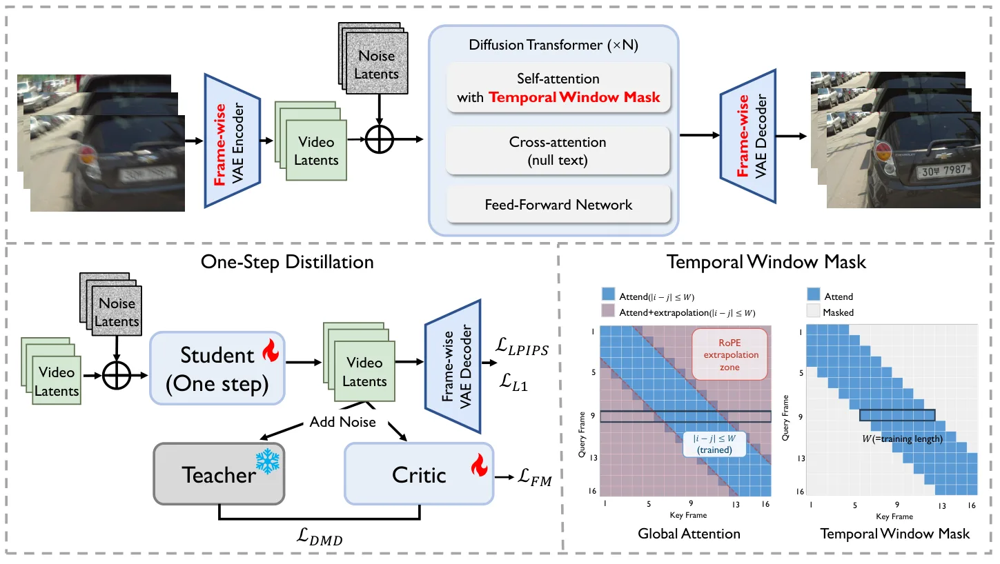

RealVDeblur：面向真实视频与三维重建的一步扩散去模糊RealVDeblur: One-Step Diffusion for Generalizable Real-World Video Deblurring
对真实视频三维重建前端有明确应用价值且兼顾长视频效率，但缺少位姿、重投影误差和几何精度的量化证据。
一句话工作总结
用 3DGS/高帧率数据合成和一步视频扩散恢复严重运动模糊，并报告改善下游三维重建。
摘要
RealVDeblur 面向复杂真实拍摄条件的视频去模糊。其物理驱动数据管线利用 scene-level 3DGS assets 和高帧率视频合成相机运动及物体运动模糊；恢复网络引入视频 diffusion prior，取消 VAE temporal compression 并采用逐帧编码，以适应逐帧变化的模糊。多步采样被蒸馏为一步生成器，training-free Temporal Window Mask 支持恒定内存的长视频推理。摘要报告其在未见真实视频上具有较强感知质量、语义保真和时间一致性，并能提高严重运动模糊条件下的下游三维重建鲁棒性。
Real-world video deblurring remains challenging due to diverse motion patterns, complex degradations, and the scarcity of realistic training data, yet robust restoration is critical for downstream pipelines such as mobile imaging and 3D reconstruction. This work presents \textbf{RealVDeblur}, an efficient generative framework designed to improve in-the-wild robustness under diverse real capture conditions. First, a large-scale, physically grounded blur synthesis pipeline is constructed from scene-level 3D Gaussian Splatting (3DGS) assets and high-frame-rate videos, providing realistic training data covering both camera-induced and object-motion blur. Second, a video diffusion prior is leveraged for restoration; to better accommodate frame-dependent blur variations, temporal compression in the VAE is disabled and a frame-wise encoding scheme is adopted. For practical deployment on long videos, multi-step diffusion sampling is distilled into an efficient one-step generator, and a training-free Temporal Window Mask stabilizes inference beyond the training horizon with constant memory usage. Extensive experiments on diverse real-world benchmarks demonstrate strong perceptual quality, semantic fidelity, and temporal consistency on unseen videos, as well as improved robustness in downstream 3D reconstruction under severe motion blur. Project page: https://rbjin.github.io/RealVDeblur
中文解读摘录
- 作者：Renbiao Jin 等
- 价值判断：直接定位于严重运动模糊下的真实视频恢复，并报告改善下游三维重建鲁棒性，可作为 VO/SfM/3DGS 前处理线索。
- 技术要点：用 scene-level 3DGS assets 与高帧率视频合成相机及物体运动模糊；取消 VAE temporal compression、采用逐帧编码，把多步 diffusion 蒸馏成一步生成器，并用 training-free Temporal Window Mask 支持恒定内存长视频推理。
- 结果边界：摘要强调感知质量、语义保真和时间一致性，但未给出位姿或重建几何的数值收益；需要警惕生成式恢复改变特征对应和真实纹理。
- 链接：arXiv · PDF · 项目页
图表/页面预览

{kind=link}
